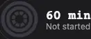
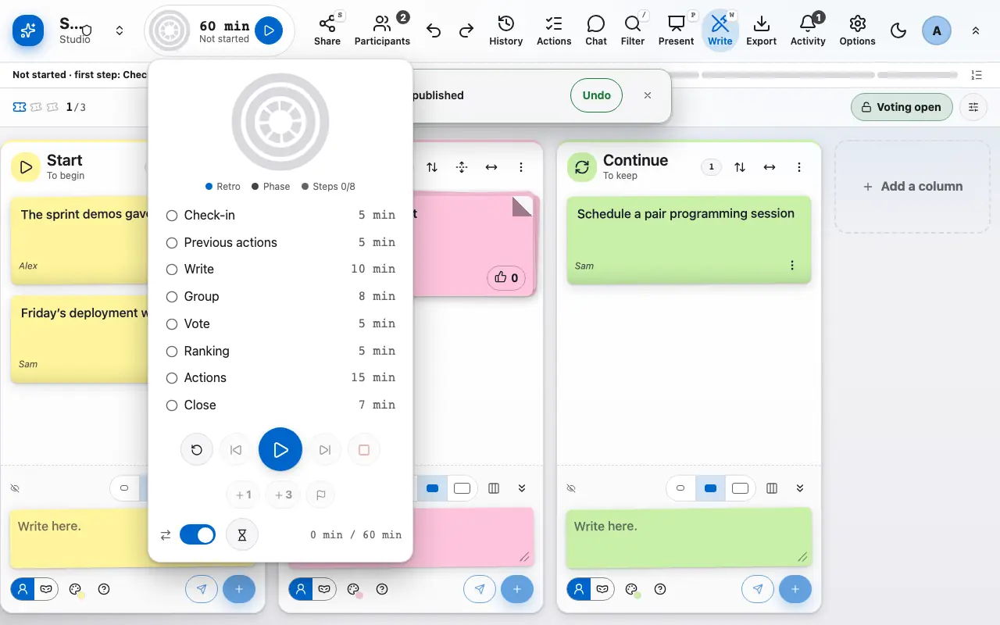
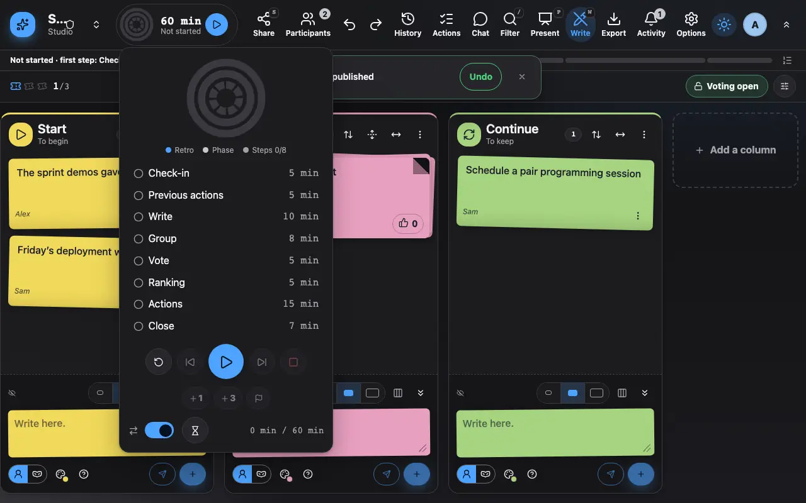

The agenda and the timer
The agenda splits the retro into timed phases.
1 The ring shows the running phase and the time left.
The ring at the top of the board shows the running phase and the time left. It fills up as the phase goes and changes colour when the time is over.

2 The agenda panel starts, skips to the next phase or extends.
Clicking the ring opens the agenda panel: start the retro, move to the next phase, extend the running phase or go back. The phases (check-in, writing, grouping, voting, actions) can be adapted to your retro.

